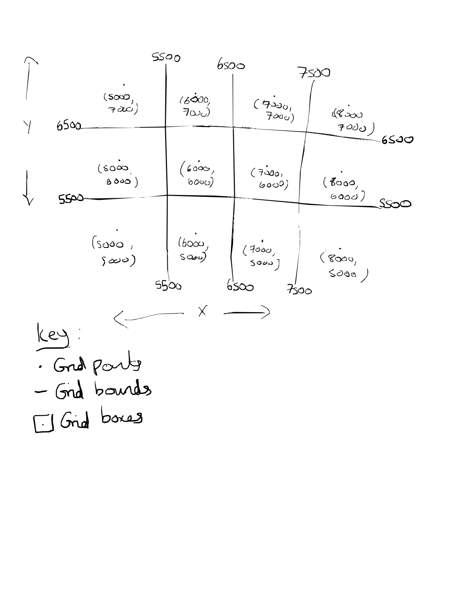
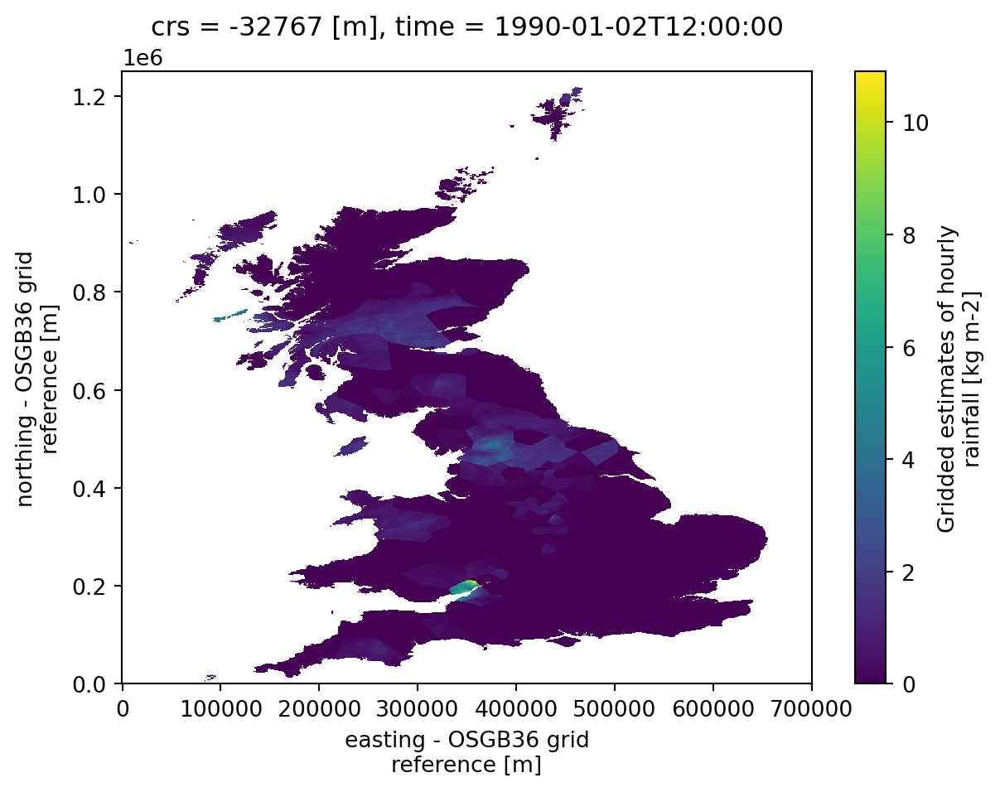
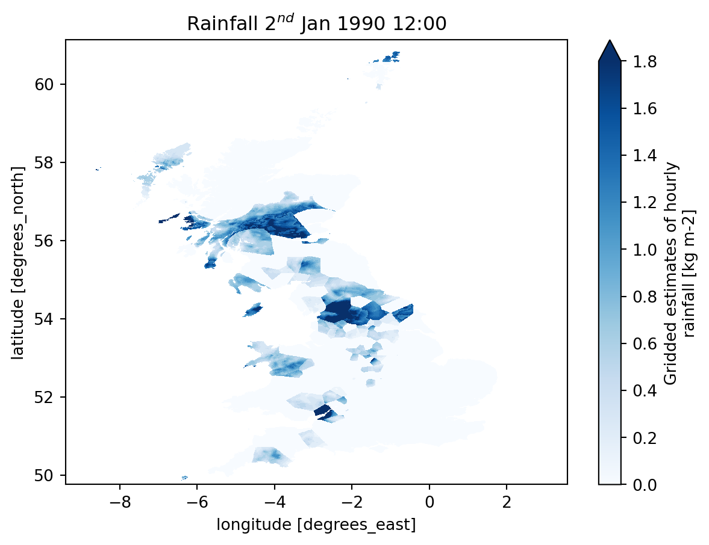
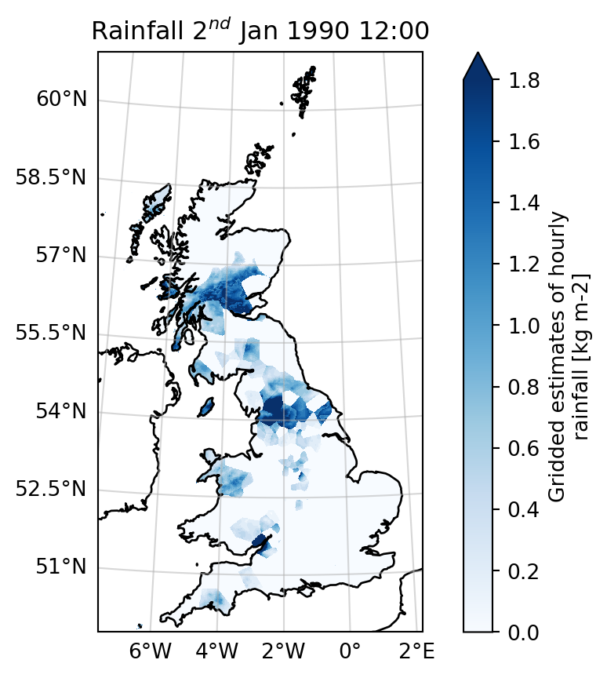

# ONLY NEEDS TO BE RUN IF USING GOOGLE COLABS
#!pip install s3fs cartopy zarr boto3 netcdf4 rasterioPart 3: Exploring remotely-stored Zarr datasets using Xarray


A brief intro to multi- or N-dimensional datasets
Multi- or N-dimensional geospatial data refers to datasets that include multiple layers or dimensions of geographical information. This data goes beyond the simple two-dimensional latitude and longitude (or y and x) coordinates we have seen in the earlier notebooks and often includes additional dimensions such as time, elevation (altitude or depth), and other variables like temperature, humidity, rainfall.
This notebook was designed for a session as part of the UKCEH Summer School. It does not cover all aspects of multi-dimensional data use by the Python scientific communities. Additional resources can be found throughout the notebook.
Contents
- Loading N-dimensional datasets from object storage
- Using Xarray with Dask to explore N-dimensional datasets
- Plotting N-dimensional datasets with Xarray and matplotlib
- Computing a climatology
- Using shapefiles to “cut-out” areas of N-dimensional datasets
Import packages
import os
import s3fs
import boto3
import xarray as xr
import numpy as np
import cartopy as cp
import geopandas as gpd
from dask.diagnostics import ProgressBar
import matplotlib.pyplot as plt
import matplotlib.animation as animation
import datetime
import zarrIn this notebook we will explore how to work with gridded N-dimensional datasets stored remotely. Specifically we will be looking at datasets stored as Zarr, which is a format becoming increasingly common in big-data science where datasets need to be stored in remote “object stores” due to their size.
NetCDF is another very common format for gridded N-dimensional datasets. Whilst we will not explicitly work with NetCDF data here, once data is read into Xarray it behaves in the same way and the same commands can be used.
Access and explore the datasets in object store buckets (using FSSpec and Xarray)
We will be working with an hourly gridded rainfall dataset - UKCEH GEAR
For publically available data such as this, we do not need any credentials, and instead pass anon=True which means ‘access the data as an anonymous user’.
We will use the FSSpec package, which basically has the ability to take any data stored on any storage system and make it look as if the data is on an ordinary disk to the rest of your code. The idea is that you run this bit of code once and then it gets out the way and lets you continue your coding as if the data was still on disk and not in a remote object store in the cloud.
To make it work we provide anon=True and the endpoint_url, but also the path to the specific dataset we want to use:
Note: There are two ways of doing this, depending on which version of the Zarr package is installed in your python environment. To check, run:
zarr.__version__'3.1.5'# zarr v2 method
#zstore = fsspec.get_mapper('s3://gearhrly/gearhrly_fulloutput_yearly_100km_chunks.zarr',
# anon=True,
# endpoint_url="https://fdri-o.s3-ext.jc.rl.ac.uk")
# zarr v3 method
fs = s3fs.S3FileSystem(anon=True, asynchronous=True, endpoint_url="https://fdri-o.s3-ext.jc.rl.ac.uk")
zstore = zarr.storage.FsspecStore(fs, path="gearhrly/gearhrly_15day_100km_chunks.zarr")We then pass the created file-system-like object to Xarray, and from here on in Xarray behaves as if the data were stored locally on disk, and we can largely forget about the fact that it’s actually stored remotely in the cloud.
ds = xr.open_zarr(zstore, consolidated=True)Next let’s explore the dataset a bit.
ds<xarray.Dataset> Size: 5TB
Dimensions: (time: 236688, y: 1251, x: 701, bnds: 2)
Coordinates:
* time (time) datetime64[ns] 2MB 1990-01-01 ... 2016-12-31T23:0...
* y (y) float64 10kB 1.25e+06 1.249e+06 1.248e+06 ... 1e+03 0.0
* x (x) float64 6kB 0.0 1e+03 2e+03 ... 6.98e+05 6.99e+05 7e+05
lat (y, x) float64 7MB dask.array<chunksize=(100, 100), meta=np.ndarray>
lon (y, x) float64 7MB dask.array<chunksize=(100, 100), meta=np.ndarray>
time_bnds (time, bnds) datetime64[ns] 4MB dask.array<chunksize=(360, 2), meta=np.ndarray>
x_bnds (x, bnds) float64 11kB dask.array<chunksize=(100, 2), meta=np.ndarray>
y_bnds (y, bnds) float64 20kB dask.array<chunksize=(100, 2), meta=np.ndarray>
crs int16 2B ...
Dimensions without coordinates: bnds
Data variables:
min_dist (time, y, x) float64 2TB dask.array<chunksize=(360, 100, 100), meta=np.ndarray>
rainfall_amount (time, y, x) float64 2TB dask.array<chunksize=(360, 100, 100), meta=np.ndarray>
stat_disag (time, y, x) float64 2TB dask.array<chunksize=(360, 100, 100), meta=np.ndarray>
Attributes: (12/29)
Conventions: CF-1.6
acknowledgement: This research forms part of the SINATRA pr...
cdm_data_type: Grid
contributor_name: Lewis, E., Quinn, N., Blenkinsop, S., Fowl...
creator_email: enquiries@ceh.ac.uk
creator_institution: UK Centre for Ecology & Hydrology (UKCEH)
... ...
standard_name_vocabulary: CF Standard Name Table v70, http://cfconve...
summary: The CEH-GEAR1hr-v2 dataset contains 1-km g...
time_coverage_duration: P27Y
time_coverage_resolution: P1H
title: Gridded estimates of hourly areal rainfall...
version: v2The variables in the dataset are split into those that describe the coordinates, and those of the main data. We can see the three main data variables: ‘min_dist’, ‘rainfall_amount’ and ‘stat_disag’, you can click the page icon at the end of each variable’s row to find out a little more about each.
The names in brackets next to the variable names (the second column of information) show you the dimensions that each variable is on. Here, all our data variables are on a 3D grid of time, y and x.
You can see in the Coordinates section that we have other coordinates besides those for the time, y and x dimensions. The lat and lon variables tell you the latitude and longitude conversion for each x,y gridpoint and the ‘xxx_bnds’ variables tell you the extent/valid range of each datapoint. So for example a gridpoint of (6000,6000) on a grid with a resolution of (1000,1000) would have extents/boundaries of (5500,6500) for both x and y, describing the extent of the gridbox this gridpoint represents. The same concept can be extended to the time-dimension too.
from PIL import Image
fs_img = s3fs.S3FileSystem(anon=True, endpoint_url="https://fdri-o.s3-ext.jc.rl.ac.uk")
display(Image.open(fs_img.open('s3://example-data/Scratch-1.png')))
More information about the dataset is available by clicking on ‘Attributes’ to expand this section
All Zarr datasets that follow the CF-Conventions (a format standard for NetCDF, and Zarr by extension, originally created for climate-model data but slowly being expanded out to cover more disciplines in the geosciences) should look similar to this one.
Variables are selected using datasetname['variablename'] syntax
The .data attribute pulls out the underlying data array of the specified variable, which in the case of Zarr will be a Dask array. Dask arrays, as opposed to standard Numpy arrays you might be used to working with, are ‘chunked’ into little parcels of data. It’s a feature of the format that makes it most suitable for storage on the cloud.
ds['rainfall_amount'].data
|
||||||||||||||||
- Bytes shows you the overall size of the array and indivdual chunk
- Shape shows you the dimension sizes of the array and chunk. This dataset has 236688 time steps!
- Dask graph tells you how many tasks (68432 here) would be needed to load the actual data into memory (see below section on Lazy Loading)
- Data type tells you what the data inside the array consists of. Here it is a Numpy array containing 64-bit (8-byte) floats (floating-point numbers), which is typical for numeric data.
Computations and visualisations with Xarray and Dask
An introduction to Lazy Loading
Before we go any further it is very important to know that Xarray loads data lazily. This means that the actual data is never loaded or computed until it absolutely has to be. So you may run some code that computes the mean of the dataset (e.g. dmean = ds['variable'].mean(dim='time')), but the computation will only actually be carried out when you want to see the result of this calculation, e.g. through a plot or print statement, or saving to disk.
Dask also takes this a step further. Dask is a library designed to automatically parallelise computations; parallelisation is essential when dealing with chunked data such as Zarr on the cloud. Dask sits in the background working out how best to parallelise your computations, then whenever Xarray actually triggers a compute, Dask will automatically kick in and process the computation in parallel. However, with Dask, the output of the computation will not persist in memory, even if you save the output to a variable (e.g. dmean = ds['variable'].mean(dim='time')). If you run the code again, Dask will recompute everything from scratch, the actual data is not stored in the variable dmean, rather the Dask-instructions for computing it. This can make code very slow if not handled correctly. The best way to handle this is to make use of Dask’s .persist()and .compute() methods. Appending this on to the end of a calculation, such as dmean = ds['variable'].mean(dim='time').compute() will keep the data in memory.
The main difference between persist and compute is that persist will allow you to continue coding whilst dask computes the result in the background, whereas compute will wait until the computation is complete before letting you continue coding. I tend to find compute behaves the most intuitively.
Now with that out the way let’s get to actually looking at the data!
Plot an individual time step
You can index the array and pull out a single timestep like you can any standard array-like object in Python
Xarray also adds a plot() method you can call to produce a rough-and-ready quick plot of the data you’ve selected, in this case the 37th timestep of the dataset
with ProgressBar():
ds['rainfall_amount'][36,:,:].plot()[ ] | 0% Completed | 158.71 us[ ] | 0% Completed | 105.60 ms[ ] | 0% Completed | 206.04 ms[ ] | 0% Completed | 306.31 ms[ ] | 1% Completed | 406.64 ms[ ] | 1% Completed | 507.09 ms[ ] | 2% Completed | 607.52 ms[# ] | 2% Completed | 708.02 ms[# ] | 3% Completed | 808.44 ms[# ] | 3% Completed | 908.85 ms[# ] | 3% Completed | 1.01 s[# ] | 3% Completed | 1.11 s[# ] | 3% Completed | 1.21 s[# ] | 4% Completed | 1.31 s[# ] | 4% Completed | 1.41 s[## ] | 5% Completed | 1.51 s[## ] | 5% Completed | 1.61 s[## ] | 6% Completed | 1.71 s[## ] | 6% Completed | 1.81 s[## ] | 6% Completed | 1.91 s[## ] | 6% Completed | 2.01 s[## ] | 7% Completed | 2.11 s[### ] | 7% Completed | 2.22 s[### ] | 8% Completed | 2.32 s[### ] | 8% Completed | 2.42 s[### ] | 8% Completed | 2.52 s[### ] | 8% Completed | 2.62 s[### ] | 8% Completed | 2.72 s[### ] | 8% Completed | 2.82 s[### ] | 8% Completed | 2.92 s[### ] | 8% Completed | 3.02 s[### ] | 8% Completed | 3.12 s[### ] | 9% Completed | 3.22 s[### ] | 9% Completed | 3.32 s[### ] | 9% Completed | 3.42 s[#### ] | 10% Completed | 3.52 s[#### ] | 10% Completed | 3.62 s[#### ] | 11% Completed | 3.72 s[#### ] | 11% Completed | 3.82 s[##### ] | 12% Completed | 3.92 s[##### ] | 13% Completed | 4.02 s[##### ] | 13% Completed | 4.12 s[##### ] | 13% Completed | 4.22 s[##### ] | 13% Completed | 4.33 s[##### ] | 13% Completed | 4.43 s[##### ] | 14% Completed | 4.53 s[##### ] | 14% Completed | 4.63 s[##### ] | 14% Completed | 4.73 s[###### ] | 15% Completed | 4.83 s[###### ] | 15% Completed | 4.93 s[###### ] | 16% Completed | 5.03 s[###### ] | 16% Completed | 5.13 s[###### ] | 17% Completed | 5.23 s[####### ] | 18% Completed | 5.33 s[####### ] | 18% Completed | 5.43 s[####### ] | 18% Completed | 5.53 s[####### ] | 18% Completed | 5.63 s[####### ] | 18% Completed | 5.73 s[####### ] | 18% Completed | 5.83 s[####### ] | 19% Completed | 5.93 s[####### ] | 19% Completed | 6.03 s[####### ] | 19% Completed | 6.13 s[####### ] | 19% Completed | 6.23 s[######## ] | 20% Completed | 6.33 s[######## ] | 20% Completed | 6.43 s[######## ] | 21% Completed | 6.53 s[######## ] | 21% Completed | 6.64 s[######## ] | 21% Completed | 6.74 s[######## ] | 21% Completed | 6.84 s[######## ] | 21% Completed | 6.94 s[######## ] | 22% Completed | 7.04 s[######## ] | 22% Completed | 7.14 s[######### ] | 22% Completed | 7.24 s[######### ] | 23% Completed | 7.34 s[######### ] | 23% Completed | 7.44 s[######### ] | 23% Completed | 7.54 s[######### ] | 23% Completed | 7.64 s[######### ] | 24% Completed | 7.74 s[######### ] | 24% Completed | 7.84 s[######### ] | 24% Completed | 7.94 s[######### ] | 24% Completed | 8.04 s[######### ] | 24% Completed | 8.14 s[######### ] | 24% Completed | 8.24 s[######### ] | 24% Completed | 8.34 s[######### ] | 24% Completed | 8.45 s[########## ] | 25% Completed | 8.55 s[########## ] | 26% Completed | 8.65 s[########## ] | 26% Completed | 8.75 s[########## ] | 27% Completed | 8.85 s[########### ] | 28% Completed | 8.95 s[########### ] | 29% Completed | 9.05 s[########### ] | 29% Completed | 9.15 s[############ ] | 30% Completed | 9.25 s[############ ] | 30% Completed | 9.35 s[############ ] | 30% Completed | 9.45 s[############ ] | 31% Completed | 9.55 s[############ ] | 32% Completed | 9.65 s[############ ] | 32% Completed | 9.75 s[############# ] | 32% Completed | 9.85 s[############# ] | 32% Completed | 9.95 s[############# ] | 32% Completed | 10.05 s[############# ] | 32% Completed | 10.15 s[############# ] | 33% Completed | 10.25 s[############# ] | 33% Completed | 10.35 s[############# ] | 34% Completed | 10.45 s[############# ] | 34% Completed | 10.55 s[############# ] | 34% Completed | 10.66 s[############# ] | 34% Completed | 10.76 s[############# ] | 34% Completed | 10.86 s[############## ] | 35% Completed | 10.96 s[############## ] | 35% Completed | 11.06 s[############## ] | 35% Completed | 11.16 s[############## ] | 35% Completed | 11.26 s[############## ] | 35% Completed | 11.36 s[############## ] | 35% Completed | 11.46 s[############## ] | 35% Completed | 11.56 s[############## ] | 35% Completed | 11.66 s[############## ] | 35% Completed | 11.76 s[############## ] | 36% Completed | 11.86 s[############## ] | 36% Completed | 11.96 s[############## ] | 37% Completed | 12.06 s[############## ] | 37% Completed | 12.16 s[############## ] | 37% Completed | 12.26 s[############### ] | 38% Completed | 12.36 s[############### ] | 38% Completed | 12.46 s[############### ] | 39% Completed | 12.56 s[################ ] | 40% Completed | 12.67 s[################ ] | 40% Completed | 12.77 s[################ ] | 41% Completed | 12.87 s[################ ] | 42% Completed | 12.97 s[################# ] | 44% Completed | 13.07 s[################# ] | 44% Completed | 13.17 s[################## ] | 46% Completed | 13.27 s[################### ] | 47% Completed | 13.37 s[################### ] | 48% Completed | 13.47 s[################### ] | 49% Completed | 13.57 s[#################### ] | 50% Completed | 13.67 s[#################### ] | 51% Completed | 13.77 s[#################### ] | 52% Completed | 13.87 s[##################### ] | 53% Completed | 13.97 s[###################### ] | 56% Completed | 14.07 s[####################### ] | 58% Completed | 14.17 s[######################## ] | 60% Completed | 14.27 s[######################### ] | 62% Completed | 14.37 s[######################### ] | 64% Completed | 14.48 s[########################## ] | 67% Completed | 14.58 s[########################### ] | 68% Completed | 14.68 s[############################ ] | 71% Completed | 14.78 s[############################# ] | 73% Completed | 14.88 s[############################## ] | 76% Completed | 14.98 s[############################### ] | 79% Completed | 15.08 s[################################ ] | 81% Completed | 15.18 s[################################# ] | 84% Completed | 15.28 s[################################## ] | 87% Completed | 15.38 s[################################### ] | 89% Completed | 15.48 s[#################################### ] | 92% Completed | 15.58 s[###################################### ] | 95% Completed | 15.68 s[####################################### ] | 97% Completed | 15.78 s[####################################### ] | 99% Completed | 15.88 s[####################################### ] | 99% Completed | 15.98 s[####################################### ] | 99% Completed | 16.08 s[########################################] | 100% Completed | 16.18 s
Customising plots
These plots can be customised to look nicer too. Note that we’re making use of Dask’s compute() method to save the variable plotpoint in memory, so that we don’t have to rerun the processing needed to extract this point from the cloud whenever we rerun the plotting commands:
with ProgressBar():
plotpoint = ds['rainfall_amount'][36,:,:].compute()[ ] | 0% Completed | 170.40 us[ ] | 0% Completed | 100.84 ms[ ] | 1% Completed | 201.37 ms[ ] | 1% Completed | 301.87 ms[ ] | 1% Completed | 402.36 ms[# ] | 2% Completed | 502.99 ms[# ] | 2% Completed | 603.59 ms[# ] | 2% Completed | 704.21 ms[# ] | 3% Completed | 804.92 ms[# ] | 3% Completed | 905.34 ms[# ] | 3% Completed | 1.01 s[# ] | 4% Completed | 1.11 s[# ] | 4% Completed | 1.21 s[# ] | 4% Completed | 1.31 s[# ] | 4% Completed | 1.41 s[## ] | 5% Completed | 1.51 s[## ] | 5% Completed | 1.61 s[## ] | 5% Completed | 1.71 s[## ] | 5% Completed | 1.81 s[## ] | 6% Completed | 1.91 s[## ] | 6% Completed | 2.01 s[## ] | 7% Completed | 2.11 s[### ] | 7% Completed | 2.21 s[### ] | 7% Completed | 2.31 s[### ] | 8% Completed | 2.41 s[### ] | 9% Completed | 2.51 s[### ] | 9% Completed | 2.61 s[#### ] | 10% Completed | 2.71 s[#### ] | 10% Completed | 2.81 s[#### ] | 10% Completed | 2.91 s[#### ] | 10% Completed | 3.01 s[#### ] | 10% Completed | 3.11 s[#### ] | 10% Completed | 3.22 s[#### ] | 11% Completed | 3.32 s[#### ] | 11% Completed | 3.42 s[##### ] | 13% Completed | 3.52 s[##### ] | 13% Completed | 3.62 s[##### ] | 13% Completed | 3.72 s[##### ] | 13% Completed | 3.82 s[##### ] | 13% Completed | 3.92 s[##### ] | 13% Completed | 4.02 s[##### ] | 13% Completed | 4.12 s[##### ] | 14% Completed | 4.22 s[##### ] | 14% Completed | 4.32 s[##### ] | 14% Completed | 4.42 s[##### ] | 14% Completed | 4.52 s[###### ] | 15% Completed | 4.62 s[###### ] | 15% Completed | 4.72 s[###### ] | 16% Completed | 4.82 s[###### ] | 17% Completed | 4.92 s[###### ] | 17% Completed | 5.02 s[####### ] | 17% Completed | 5.13 s[####### ] | 18% Completed | 5.23 s[####### ] | 18% Completed | 5.33 s[####### ] | 18% Completed | 5.43 s[####### ] | 18% Completed | 5.53 s[####### ] | 18% Completed | 5.63 s[####### ] | 18% Completed | 5.73 s[####### ] | 19% Completed | 5.83 s[####### ] | 19% Completed | 5.93 s[####### ] | 19% Completed | 6.03 s[####### ] | 19% Completed | 6.13 s[####### ] | 19% Completed | 6.23 s[####### ] | 19% Completed | 6.33 s[####### ] | 19% Completed | 6.43 s[######## ] | 20% Completed | 6.53 s[######## ] | 20% Completed | 6.63 s[######## ] | 21% Completed | 6.73 s[######## ] | 21% Completed | 6.83 s[######## ] | 21% Completed | 6.93 s[######## ] | 21% Completed | 7.04 s[######## ] | 21% Completed | 7.14 s[######## ] | 21% Completed | 7.24 s[######## ] | 21% Completed | 7.34 s[######## ] | 21% Completed | 7.44 s[######## ] | 21% Completed | 7.54 s[######## ] | 22% Completed | 7.64 s[######## ] | 22% Completed | 7.74 s[######## ] | 22% Completed | 7.84 s[######### ] | 22% Completed | 7.94 s[######### ] | 22% Completed | 8.04 s[######### ] | 23% Completed | 8.14 s[######### ] | 23% Completed | 8.24 s[######### ] | 24% Completed | 8.34 s[######### ] | 24% Completed | 8.44 s[######### ] | 24% Completed | 8.54 s[######### ] | 24% Completed | 8.64 s[########## ] | 25% Completed | 8.74 s[########## ] | 25% Completed | 8.84 s[########## ] | 25% Completed | 8.94 s[########## ] | 25% Completed | 9.04 s[########## ] | 25% Completed | 9.14 s[########## ] | 26% Completed | 9.25 s[########## ] | 26% Completed | 9.35 s[########## ] | 26% Completed | 9.45 s[########## ] | 26% Completed | 9.55 s[########### ] | 28% Completed | 9.65 s[########### ] | 28% Completed | 9.75 s[########### ] | 29% Completed | 9.85 s[############ ] | 30% Completed | 9.95 s[############ ] | 30% Completed | 10.05 s[############ ] | 31% Completed | 10.15 s[############ ] | 31% Completed | 10.25 s[############ ] | 32% Completed | 10.35 s[############ ] | 32% Completed | 10.45 s[############ ] | 32% Completed | 10.55 s[############ ] | 32% Completed | 10.65 s[############# ] | 32% Completed | 10.75 s[############# ] | 32% Completed | 10.85 s[############# ] | 32% Completed | 10.95 s[############# ] | 32% Completed | 11.05 s[############# ] | 33% Completed | 11.15 s[############# ] | 33% Completed | 11.25 s[############# ] | 33% Completed | 11.35 s[############# ] | 34% Completed | 11.45 s[############# ] | 34% Completed | 11.56 s[############## ] | 35% Completed | 11.66 s[############## ] | 36% Completed | 11.76 s[############## ] | 36% Completed | 11.86 s[############## ] | 36% Completed | 11.96 s[############## ] | 36% Completed | 12.06 s[############## ] | 36% Completed | 12.16 s[############## ] | 37% Completed | 12.26 s[############## ] | 37% Completed | 12.36 s[############### ] | 39% Completed | 12.46 s[################ ] | 40% Completed | 12.56 s[################ ] | 41% Completed | 12.66 s[################ ] | 41% Completed | 12.76 s[################ ] | 42% Completed | 12.86 s[################# ] | 42% Completed | 12.96 s[################## ] | 45% Completed | 13.06 s[################## ] | 47% Completed | 13.16 s[################### ] | 48% Completed | 13.26 s[################### ] | 49% Completed | 13.36 s[#################### ] | 50% Completed | 13.46 s[#################### ] | 52% Completed | 13.56 s[##################### ] | 53% Completed | 13.66 s[##################### ] | 54% Completed | 13.76 s[###################### ] | 56% Completed | 13.87 s[####################### ] | 57% Completed | 13.97 s[####################### ] | 59% Completed | 14.07 s[######################## ] | 62% Completed | 14.17 s[########################## ] | 65% Completed | 14.27 s[########################### ] | 68% Completed | 14.37 s[############################ ] | 70% Completed | 14.47 s[############################# ] | 72% Completed | 14.57 s[############################# ] | 74% Completed | 14.67 s[############################### ] | 77% Completed | 14.77 s[################################ ] | 80% Completed | 14.87 s[################################# ] | 82% Completed | 14.97 s[################################# ] | 84% Completed | 15.07 s[################################### ] | 87% Completed | 15.17 s[################################### ] | 89% Completed | 15.27 s[##################################### ] | 92% Completed | 15.37 s[###################################### ] | 95% Completed | 15.47 s[####################################### ] | 98% Completed | 15.57 s[########################################] | 100% Completed | 15.68 splotpoint.plot.pcolormesh('lon', 'lat', cmap='Blues', robust=True)
plt.title(r'Rainfall $2^{nd}$ Jan 1990 12:00')Text(0.5, 1.0, 'Rainfall $2^{nd}$ Jan 1990 12:00')
Here we have: - changed the axes to use lon/lat instead of x/y coordinates by specifying the dataset name of the longitude and latitude variables in the plotting command - changed the colourmap to a nicer one (all pre-built colourmaps can be found at https://matplotlib.org/3.1.0/tutorials/colors/colormaps.html) - changed the title to better describe the data being plotted - used Xarray’s ‘robust’ option, which modifies the colourbar to not stretch to the maximum of the data if it is an outlier. This stops a small area of very high values dominating the colourbar and making other variation invisible
But it would also be nice to have some coastlines. For this we have to go beyond what Xarray’s built-in plotting can acheive and use the Cartopy package:
import cartopy.crs as ccrs # the set of map projections cartopy supports
import cartopy as cp # the full cartopy packagePassing the projection ‘key-word argument’ to the plotting function tells the plotting library to invoke cartopy to draw the plot using a given map projection. Here we are using the ‘OSGB’ map projection (a cartesian grid, in other words a flat plane approximation that ignores the curvature of the earth) which a lot of UK hydrological data will be on. For any data that is on a ‘lon/lat’ grid instead of an ‘x/y’ grid, the ccrs.PlateCarree() projection is a better option.
plot1 = plotpoint.plot.pcolormesh(cmap='Blues', robust=True, subplot_kws=dict(projection=ccrs.OSGB())) # create the initial plot
plt.title(r'Rainfall $2^{nd}$ Jan 1990 12:00')
plot1.axes.coastlines() # add coastlines
gl = plot1.axes.gridlines(draw_labels=True, alpha=0.5) # add gridlines. The alpha parameter is the transparency between 0 and 1.
gl.top_labels = False
gl.right_labels = False # remove the top and right gridlines labels to make the plot look nicer